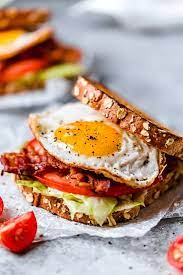

Bacon, Egg, Lettuce, Tomatoe

Description
A deliciously toasty sandwih great for breakfast, lunch or
if your just looking for something tasty and easy
to make after a hard days work.
Ingredients
- Butter
- Bread
- Eggs
- Bacon
- Lettuce
- Tomatoe
Steps
- Begin by cooking some bacon in a pan, after
you find it is done take out the bacon and
bacon grease but leave some grease as we
will use it for our eggs.
- Crack an egg into pan with leftover bacon
grease and cook until the underside is white
and the top side starts to settle and turn white.
Then flip the egg for about 30 seconds. Keep cooking
the egg if your dont want your egg over easy
- Toast your bread to your desired color, while that is
while that is toasting cut up your tomatoes and Lettuce.
Assemble your sandwich and Enjoy! :)